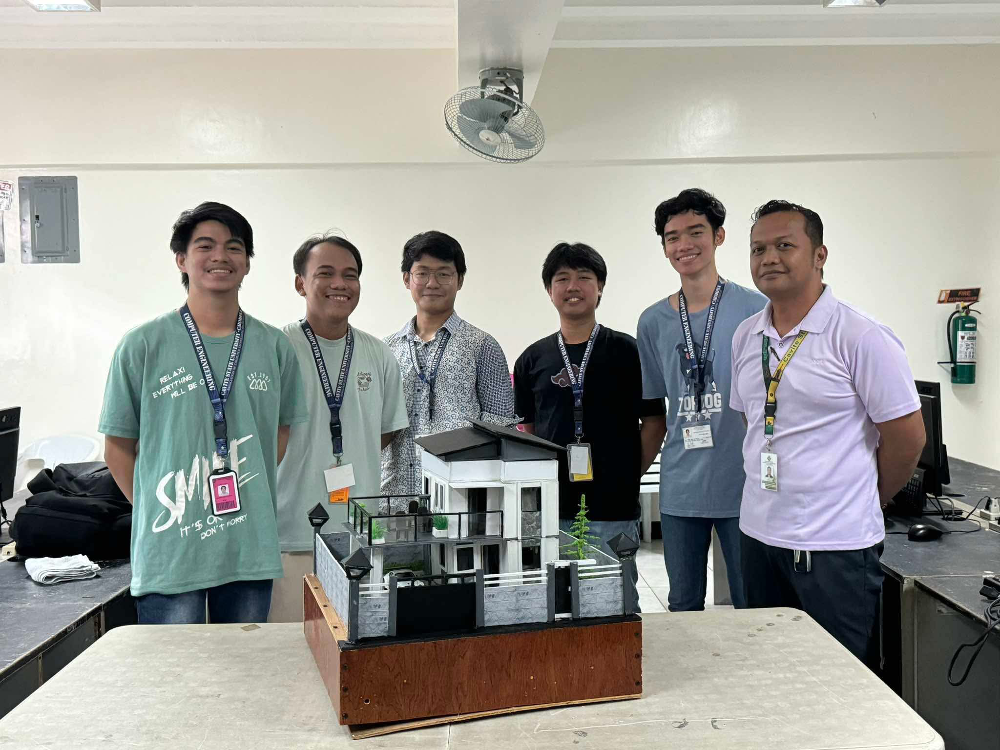
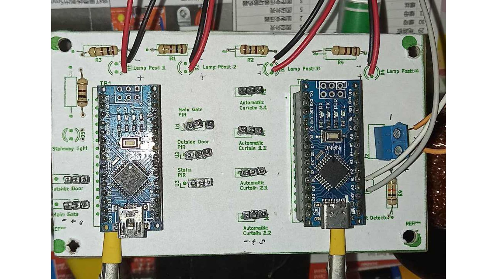
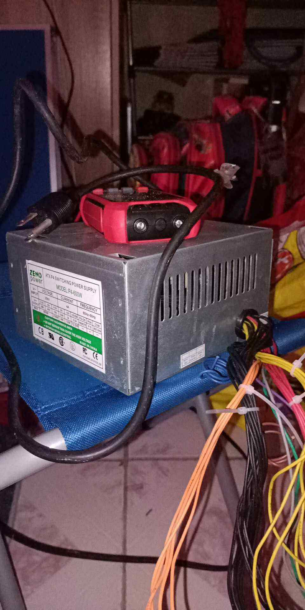
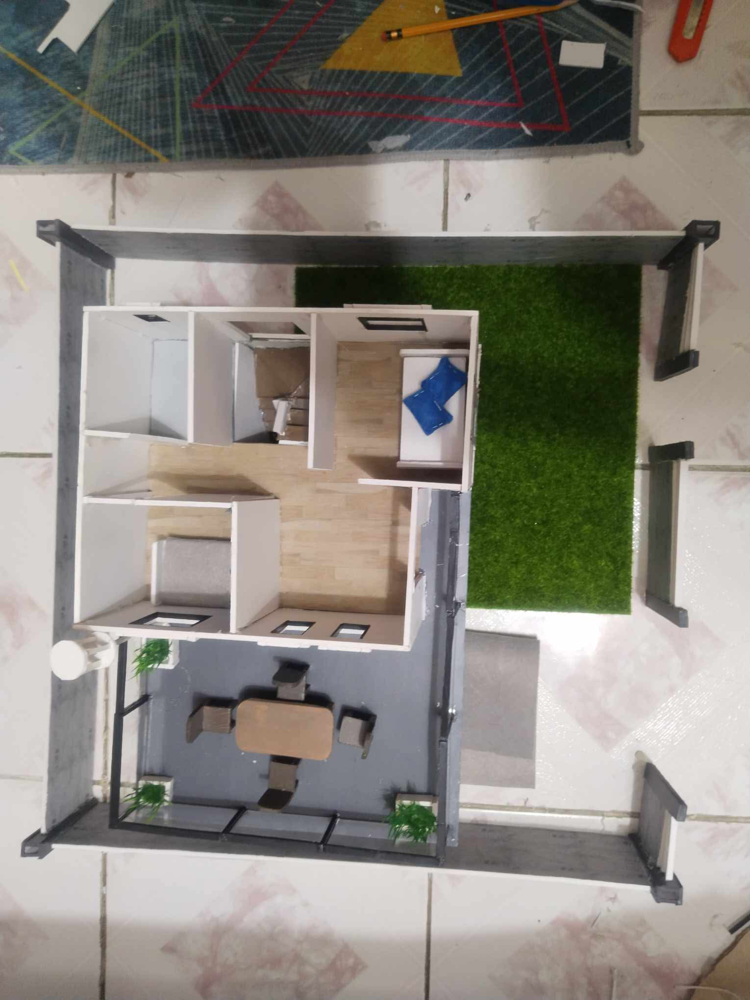
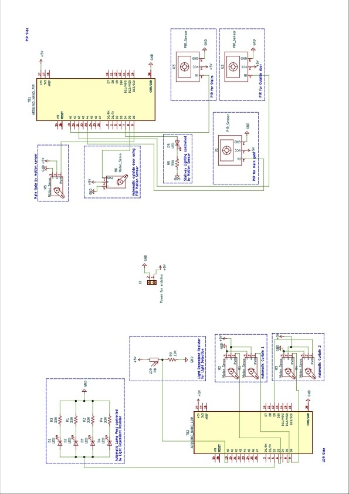
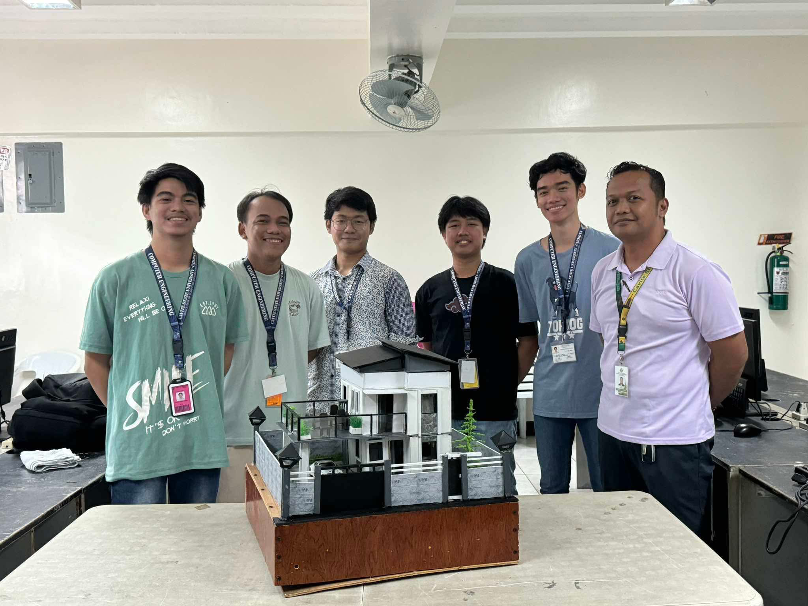
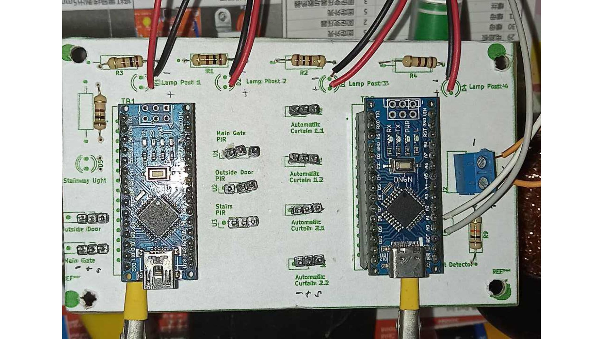
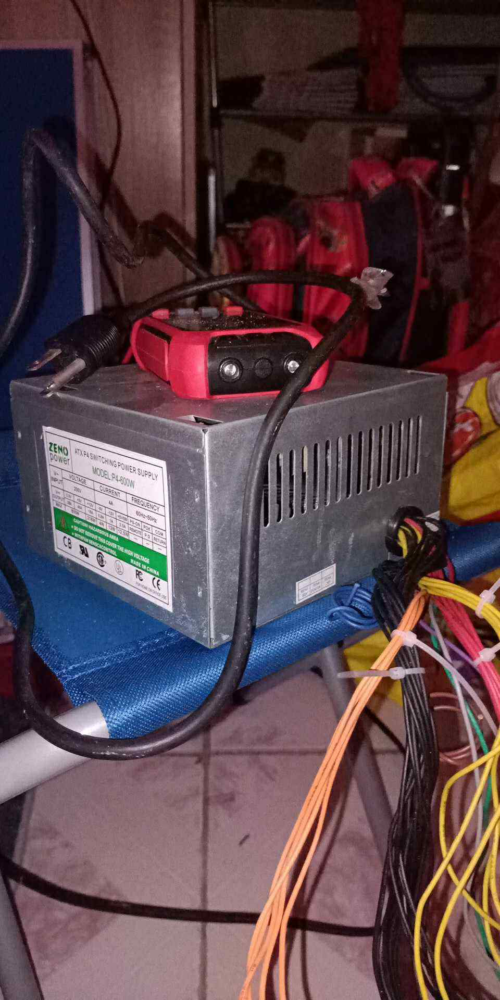
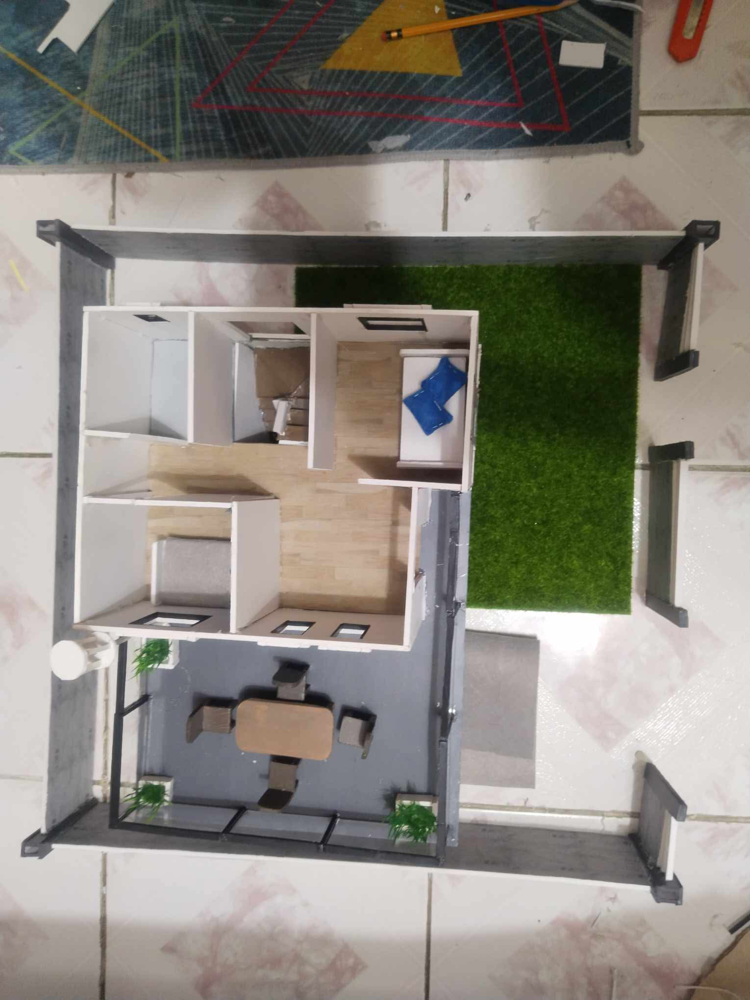
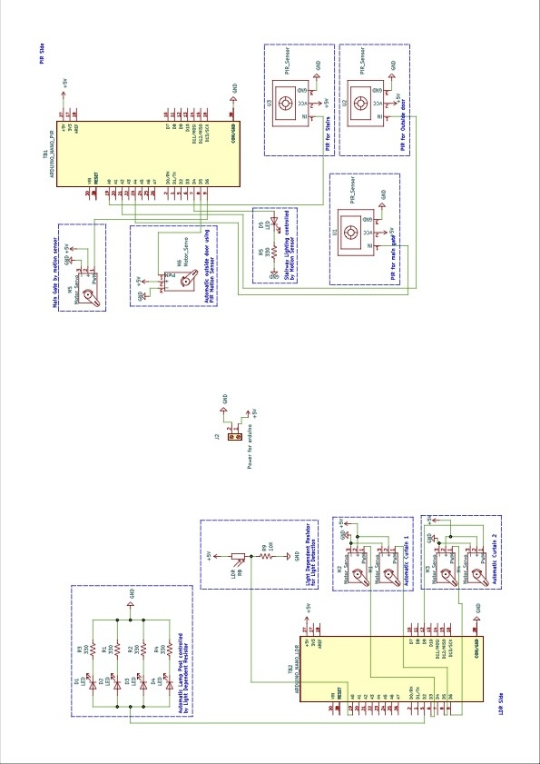

App-Controlled Main Door
Through the ESP32, we made the main door open and close from the app. This challenged us to balance timing, motor movement, and stable wireless communication.
This project was our team's hands-on introduction to real IoT and automation. We used ESP32 and Arduino to build a miniature smart home that reacts to light, motion, and app controls. Working on this helped us improve our embedded skills, learn to troubleshoot real hardware issues, and honestly — it was one of the most enjoyable builds we've done together.
We built a lighting system controlled through a mobile app using the ESP32. Watching the lights respond instantly helped us understand wireless control and device communication.
We programmed an Arduino to control a keypad-activated sliding door. With the Ultrasonic Sensor as a detection if there's a person at the front of the gate, and only then the user can input the set password at the keypad.
We used a PIR sensor to activate the garden lights when someone walks by.
We added an LDR to power the post lights when it gets dark.
Through the ESP32, we made the main door open and close from the app. This challenged us to balance timing, motor movement, and stable wireless communication.

We designed and connected the PCB layout for all sensors, motors, and microcontrollers. This taught us how to organize circuits cleanly and make the whole system stable.
 








